Brend
Moda olamiga qiziqqanlar
O‘z ijodini moda dizaynida sinab, kelajakda o‘z brendini yaratmoqchi bo‘lganlar.
Onlayn kurs · Nazokat Ahmedova
O‘z g‘oyalaringizni eskizlar orqali tasvirlang
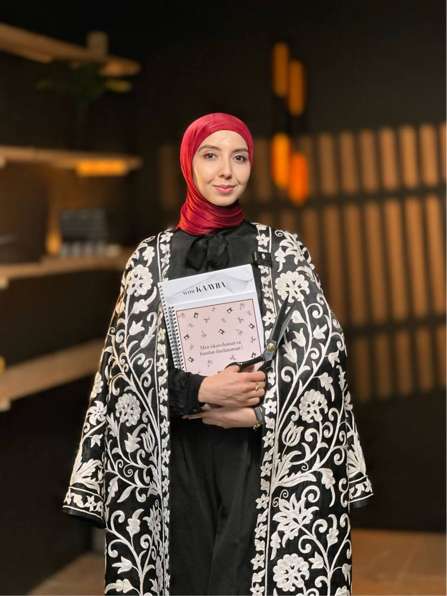
Kurs kimlar uchun
Eskizni ishiga aylantirmoqchi bo‘lganlar,
atelye yoki o‘z brendini ochishni rejalashtirganlar uchun.
Brend
O‘z ijodini moda dizaynida sinab, kelajakda o‘z brendini yaratmoqchi bo‘lganlar.
Atelye
Mijozga modelni eskizda ko‘rsatib, buyurtmani chizib taklif qilishni o‘rganmoqchi bo‘lganlar.
Institut
Dizayn va eskiz asoslarini o‘rganib, moda yo‘nalishidagi ta’limga tayyorlanayotganlar.
Noldan
Hozir chizishni bilmaydigan, lekin libos dizayni sohasini noldan boshlamoqchi bo‘lganlar.
Kursga 16 yoshdan katta qizlar qabul qilinadi.
Shakllardan boshlab inson tanasi, proporsiya va har xil pozalargacha. Eskizning poydevori shu yerda quriladi.
Siyoh va akvarel bilan siluet, rang aylanasi, ranglarni aralashtirish va teri tusini chiqarish.
Burma, shifon, jinsi, mo‘yna, trikotaj, hayvon printlari. Har bir mato qog‘ozda qanday “o‘qilishi” ko‘rsatiladi.
Fashion portret va to‘liq kompozitsiya: bir varaqda bir nechta figura bilan tugallangan eskiz.
Fantaziyani o‘stirish, to‘g‘ri va noto‘g‘ri moda, ranglar va stillar nazariyasi.
Bonus · jonli darslar
Jonli darslar shu mahoratni qanday pulga aylantirishni ko‘rsatadi.
Natija
Eskiz chizishni daromadga aylantirish yo‘lini bilasiz.
Atelye, o‘z brendingiz yoki buyurtma asosida ishlash. Savollaringizga ustozning o‘zidan jonli javob olasiz.
Qanday o‘qiysiz
Video
Telefonda yoki jonli efirdan yozib olingan emas. Qo‘l harakati, mo‘yqalam va rang yaqindan ko‘rinadi.
Vazifa
Topshiriqlarni yuborasiz, ustoz har bir o‘quvchining ishini alohida ko‘rib, xatolarni rasm ustida chizib tushuntiradi va fikr yozadi.
Nazariya
Ranglar, stillar va moda nazariyasi alohida pullik kurs emas, dasturning bir qismi.
Kurs platformasi
Darslar kaayba.uz platformasida. Telefon, planshet yoki kompyuterdan kirasiz, qayerda to‘xtaganingiz saqlanadi.
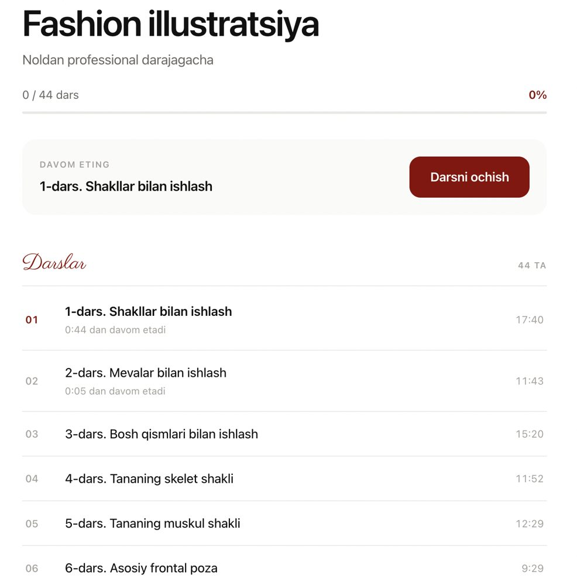
O‘quvchilar ishlari
Quyidagilar o‘quvchilarning haqiqiy ishlari: akvarel, qalam va marker bilan qog‘ozda chizilgan to‘liq kompozitsiyalar.
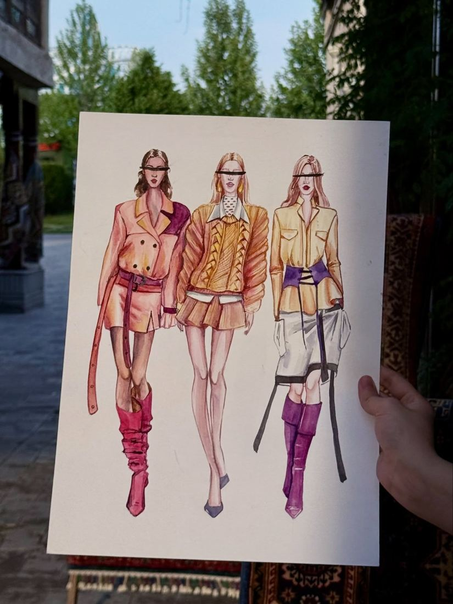
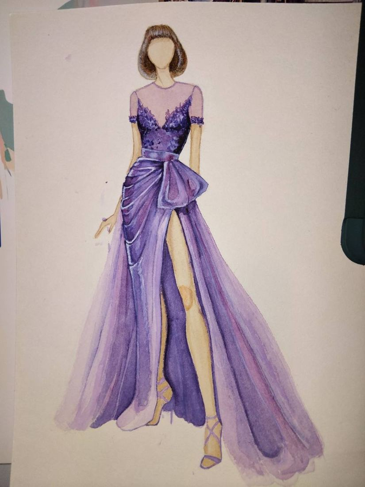
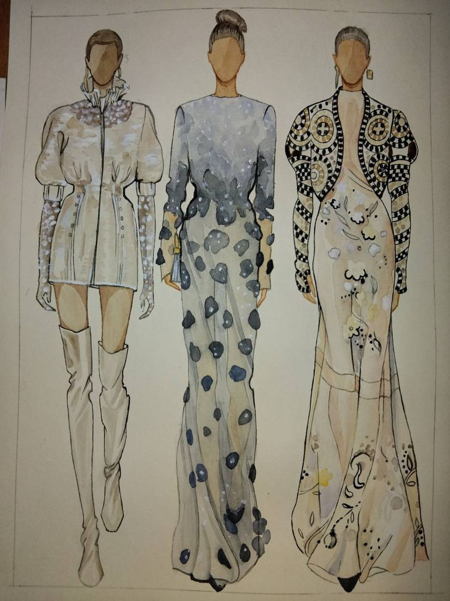
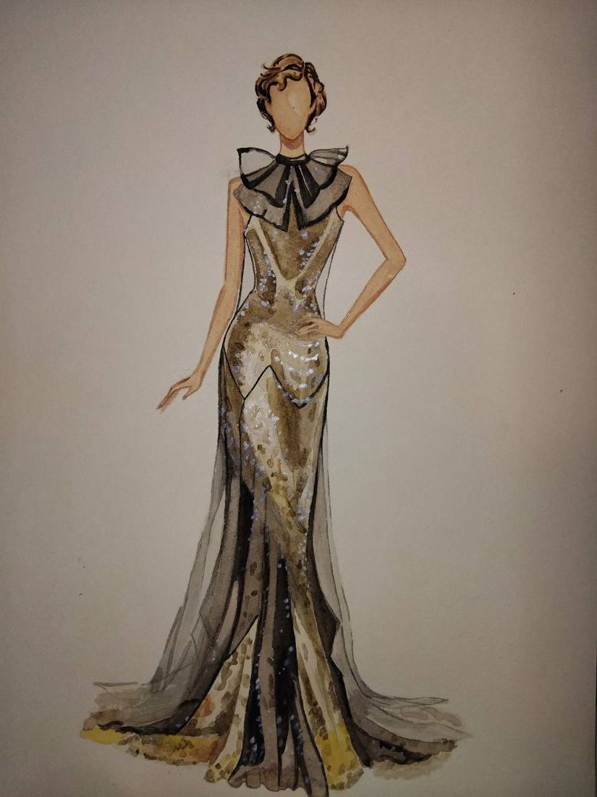
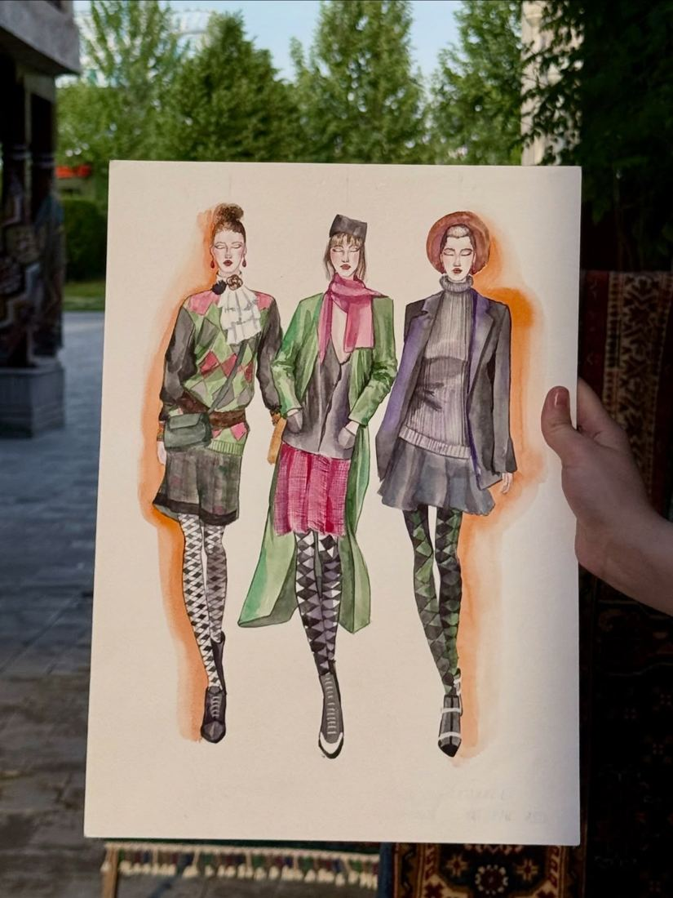
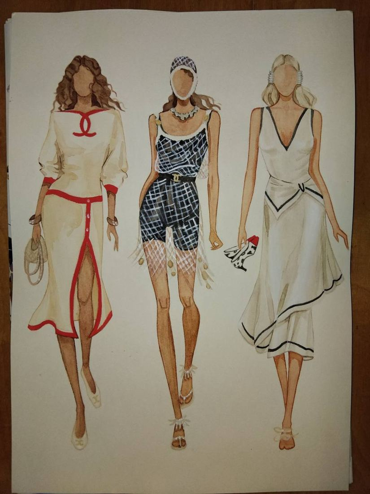
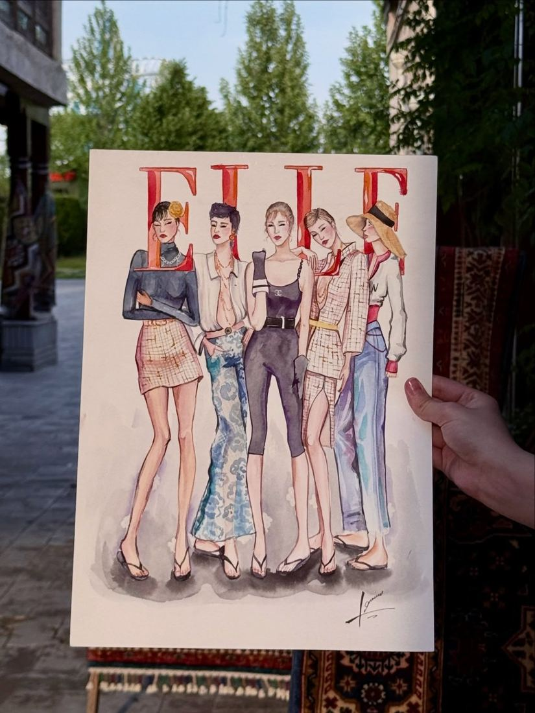
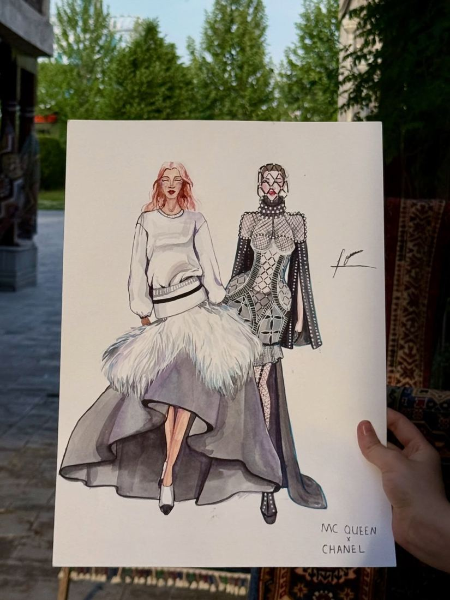
O‘quvchilar fikri
O‘quvchilarning ustozga yozgan xabarlaridan parchalar. Har birining asl yozishmasini ochib ko‘rish mumkin.
Albatta yoqdi menga. Arziydi. Hozir ishlagan eskizlarim bilan oldingilarini solishtirsam, osmon bilan yercha farqi bor ekan.
Biz bu kursda faqat chizish emas, balki bu iqtidorimizdan qanday foydalanishni o‘rgandik. Video darslik ham tushunarli va qulay bo‘ldi.
Men bu darsdan keyin hayolimga kelgan eskizni qog‘ozga tushirib olaman, unga yana g‘oyalar qo‘shimcha qilaman.
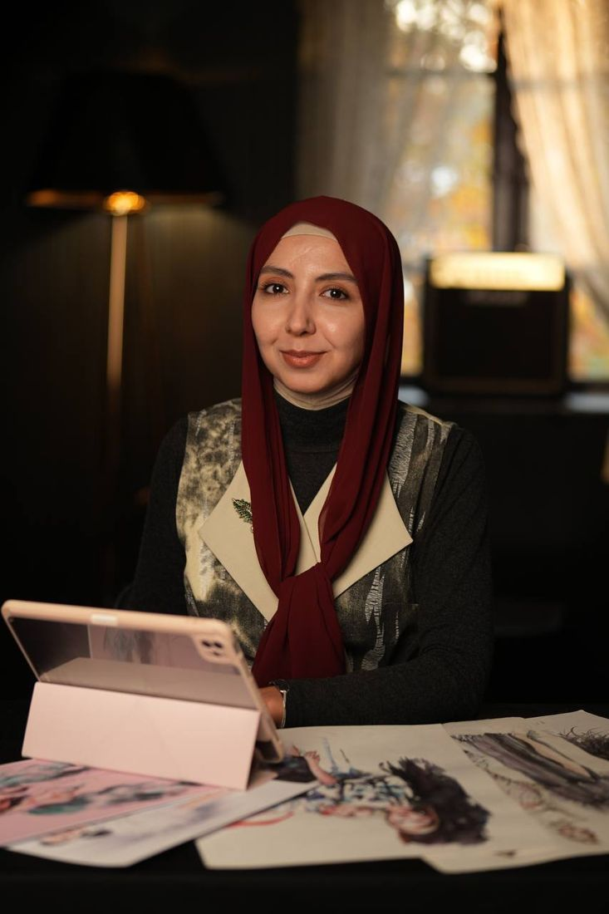
Nazokat Ahmedova
Ustoz va kurs muallifi
Men, Nazokat Ahmedova, 2017-yildan beri fashion illyustratsiyadan 100 dan ortiq o‘quvchiga oflayn va onlayn dars berib kelyapman. Kurs dasturi ko‘p yillik tajriba va professional ustozlar maslahati bilan ketma-ket tuzilgan, shu asosda o‘zimning muallifiy kitobimni chiqarganman.
Bonuslar
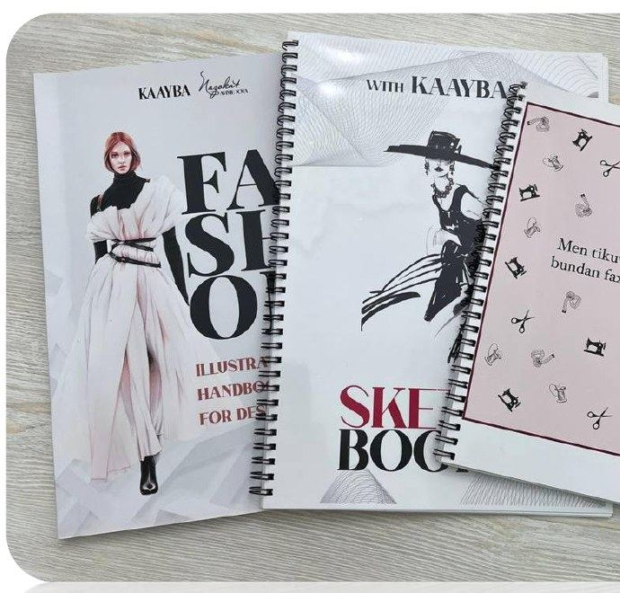
Muallifiy illyustratsiya qo‘llanmasi va sketchbuk. Har bosqich chizib ko‘rsatilgan, darslar shu kitob asosida o‘tiladi.
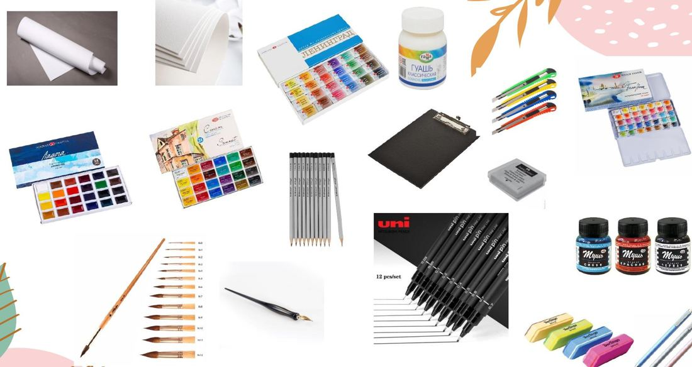
Akvarel, qalamlar, mo‘yqalamlar va qog‘oz: birinchi darsdan boshlash uchun kerakli hamma narsa.
Kursga yozilish
Ism va raqamingizni yozing. Ustoz jamoasi siz bilan bog‘lanib, savollaringizga javob beradi va to‘lov tartibini tushuntiradi.
Toshkent, Labzak, Anhor park, Hunarmandlar markazi
Savollar
Ha. Kurs oddiy shakllar va mevalardan boshlanadi, keyin tana, poza va proporsiyaga o‘tiladi. Har bir texnika va qurol batafsil tushuntiriladi.
Darslar kaayba.uz platformasida. Telefon, planshet yoki kompyuterdan o‘zingizga qulay vaqtda ko‘rasiz. Jonli darslar Zoom orqali bo‘ladi.
Ustozning o‘zi. Har bir o‘quvchining ishi alohida ko‘riladi, xatolar rasm ustida chizib ko‘rsatiladi va yozma fikr beriladi.
Ha, oyma-oy bo‘lib to‘lash mumkin. To‘lov karta orqali ham qabul qilinadi.
Bu kursda video darslar professional suratga olingan, nazariya va biznes bo‘yicha jonli darslar narx ichida, har bir ish ustozning o‘zi tomonidan tekshiriladi. Kitob va o‘quv qurollari ham bonus sifatida beriladi.
Ha, KAAYBA Fashion School faqat ayol-qizlar bilan ishlaydi. Onlayn kursga 16 yoshdan katta o‘quvchilar qabul qilinadi.